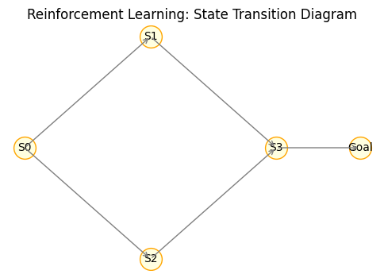

強化学習の基礎
強化学習は、エージェントが環境と相互作用しながら試行錯誤を通じて最適な行動を学習する手法です。教師あり学習とは異なり、正解を与えられるのではなく、行動の結果として得られる報酬から学習します。
強化学習のプロセス
エージェントは環境から現在の状態 (state) を受け取り、可能な行動 (action) の中から 1 つを選択します。環境はその行動に応じて次の状態と報酬 (reward) を返します。
エージェントはこの報酬を最大化するように方策 (policy) を改善していきます。報酬は正（ポジティブ）または負（ネガティブ）で与えられ、短期的な報酬だけでなく長期的な累積報酬を最大にする行動方針を学習します。
強化学習のサイクル
- 環境から状態 s を観測する。
- 方策に従って行動 a を選択する。
- 環境から報酬 r と次の状態 s' を受け取る。
- 報酬と新しい状態に基づいて方策や価値を更新する。
このサイクルを繰り返しながら、エージェントは探索（新しい行動を試す）と活用（これまで得られた知識を活かす）のバランスを取りつつ、最適な行動戦略を身につけます。

主なアルゴリズム
| カテゴリ | 代表的な手法 | 特徴 |
|---|---|---|
| 価値ベース | Q 学習、SARSA | 状態–行動価値を学習し、最大価値を選択する。 |
| 方策ベース | REINFORCE、方策勾配法 | 方策自体を直接最適化し、連続行動空間にも適用可能。 |
| アクター–クリティック | A2C、A3C | アクターが方策を決定し、クリティックが価値を評価する。 |
強化学習の応用例
強化学習は囲碁やチェスのようなゲーム、ロボット制御、自律走行や資源配分など多様な問題に応用されます。深層学習と組み合わせた手法（深層強化学習）は特に高い性能を示しています。
強化学習はゲームや自動運転、ロボット制御など多くの分野で応用され、深層学習と組み合わせた手法が高い性能を示しています。